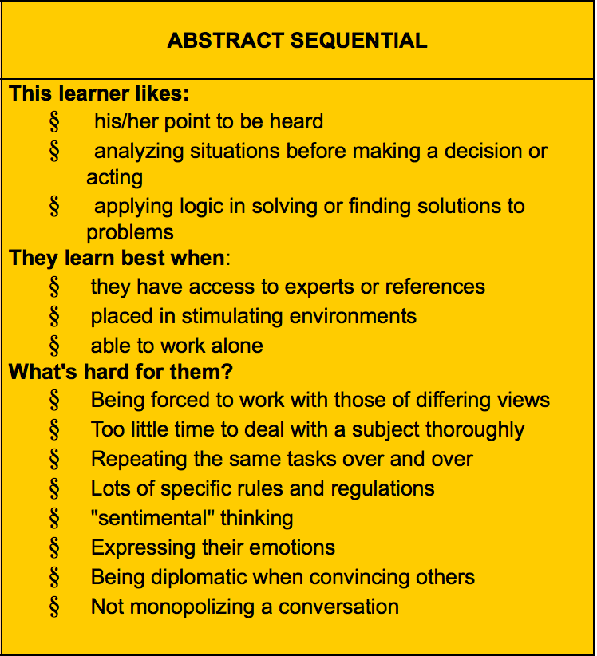

The first time I took the personal thinking style quiz, I came away categorized as an Abstract Sequential Thinker. Take a look on the right at the characteristics of this mind style. 
I know what you're thinking: Is "Abstract Sequential Thinker" the research term for Overbearing, Domineering Asshole? And that's... that's me?? Ugh. Okay, I guess if I'm honest, I do exhibit many of these characteristics to varying degrees. Which hasn't been a problem for me on solo work unless I'm in a chaotic environment. But where these "qualities" might be problematic is during Pair Programming. Many of these tendences are just obnoxious if left unchecked, so I do consciously suppress myself during the few sessions I've had so far, trying not to be too controlling. The one Abstract Sequential Thinker characteristic that's way the hell off is the one where I have trouble with "sentimental" thinking. I came across this poem recently called "The Summer I Was Sixteen" and love it. Probably not what they mean by "sentimental," but whatever. These DBC blog posts tend to be pretty dry, let's be honest, and, well, lacking in poetry (mine included), so I'll place it here:
The turquoise pool rose up to meet us, its slide a silver afterthought down which we plunged, screaming, into a mirage of bubbles. We did not exist beyond the gaze of a boy. Shaking water off our limbs, we lifted up from ladder rungs across the fern-cool lip of rim. Afternoon. Oiled and sated, we sunbathed, rose and paraded the concrete, danced to the low beat of "Duke of Earl". Past cherry colas, hot-dogs, Dreamsicles, we came to the counter where bees staggered into root beer cups and drowned. We gobbled cotton candy torches, sweet as furtive kisses, shared on benches beneath summer shadows. Cherry. Elm. Sycamore. We spread our chenille blankets across grass, pressed radios to our ears, mouthing the old words, then loosened thin bikini straps and rubbed baby oil with iodine across sunburned shoulders, tossing a glance through the chain link at an improbable world.
Honestly, though, through years of academic experience, years of trial and error, and habitually falling into every learning pitfall possible, I feel I know myself pretty well to make the most of DBC. Like one of the biggest things for me is never to cram. When I try to learn something new in a short amount of time, I struggle mightily to retain information, much less make connections and acquire any deep understanding. So for these weekly lessons with material new to me, I know I need to start early and likely make several passes. Another big ticket item is that I can't just read about what I'm learning. I have to write it out myself, run it, see it in action, tinker with it, break it. I need to demonstrate it to myself.
My experience in Phase 0 to this point has been good. But then I haven't been exposed to much new material yet, so I haven't really been tested. Having been a CS major and worked as a software engineer has helped a lot, obviously. I feel like a bit of a sandbagger, actually, when compared to the majority of the other DBC-ers who have little to no background in engineering. I am amazed at how fast they pick this stuff up. Maybe I'm just a slow learner, but I'm not sure I could pull off what they're doing.
I did struggle-- and still struggle-- with CSS Positioning during Week 2. But not from anything I did or didn't do, I don't think, but just because it's a fairly intricate topic. One that requires more than a few days to understand and master. I hope to put in more time, research, and practice towards it to shore that up.
DBC, you're preaching to the choir when it comes to the growth vs. fixed mindset. When I was teaching, convincing kids (especially inner-city kids) that their intelligence-- and by implication their destiny-- isn't static was always an end goal. (Of course it is for any idealistic teacher.) Focusing on the process and not the end result is a topic I brought up frequently with my kids, especially because I taught math. Maybe it's the high-stakes testing culture here in the States, but in math-- particularly in math-- there exists a tyranny of The Right Answer. It's real. How my students arrived at the right answer or if it was accompanied by mental connections and understanding: these things were of little consequence to them. This was a fight I tried to make every day. So, naturally, now that I'm a student again, I have to practice what I preached. I try not to "game" these weekly DBC lessons: superficially get the work done or to the right answer just for the fleeting gratification of being done or right. Instead, I'm focused on making connections and cementing deep understanding the way I wanted my kids to.